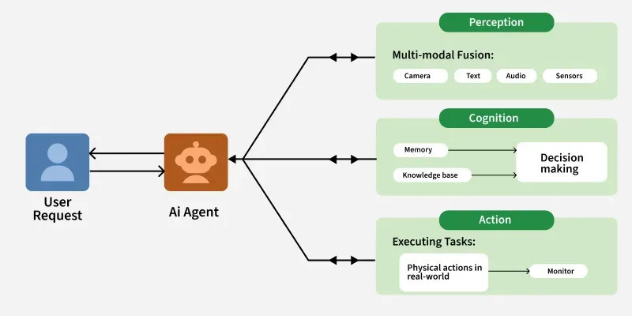

All Questions
Q: How are LLM Models classified? - Architecture → decoder / encoder / MoE / SSM / multimodal - Training stage → base / SFT / RLHF / reasoning - Modality → text / vision / audio / code - Scale → frontier / mid-tier / SLM / edge - Access → proprietary / open-weights / open-source - Domain → general / coding / science / embeddings - Generation → GPT-2 era → ... → agentic era - Context window → standard / extended / long-context
Q: What is the 7 types of LLM Models? Model Type Key Characteristic Core Use Case
| Model Type | Key Characteristic | Core Use Case |
|---|---|---|
| Base Models | Trained on raw, unlabeled data via next-token prediction | The foundation for all other models; lacks instruction-following |
| Instruction-Tuned | Fine-tuned (SFT/RLHF) to follow specific user commands | Powering assistants like ChatGPT, Gemini, and Claude |
| Mixture of Experts (MoE) | Sparse architecture where only "expert" sub-networks activate | Scaling models to trillions of parameters with faster inference |
| Reasoning Models | Optimized for multi-step thought (Chain-of-Thought) | Complex math, coding, and logical problem-solving |
| Multimodal (MLLM) | Processes text, images, audio, and video simultaneously | Document parsing, visual Q&A, and rich data interpretation |
| Hybrid Models | Dynamically switches between "fast" and "deep reasoning" paths | Adaptive AI that balances cost and performance on-the-fly |
| Deep Research Agents | Autonomous agents that iterate via web browsing and tools | In-depth investigation and structured report generation |
Q: What is an AI Agent? - AI Agents are software systems that use AI to pursue goals and complete tasks on behalf of users. They show reasoning, planning and memory and have a level of autonomy to make decisions, learn and adapt. They are best suited for executing multi-step plans towards a goad and taking actions such as calling APIs, using software tools, updating databases, etc. MCP is the standard to expose the tool to an agent. - An AI Agent is a system that uses a Large Language Model (LLM) as its "brain" to perceive its environment, reason through complex goals, and execute actions autonomously using external tools to achieve a specific outcome.
Q: What are the Key Features of AI Agents? - AIAutonomy: Act independently without constant human intervention. - Goal-Oriented: Driven by objectives, aiming to maximize success based on defined metrics. - Perception & Observation: Gather information from the environment (sensors, digital inputs) to understand context. - Reasoning & Rationality: Analyze data, identify patterns, and make informed, optimal decisions by combining data, domain knowledge, and past context. - Planning: Develop strategic plans to achieve goals. - Acting & Proactivity: Take initiative and execute actions/tasks based on decisions and plans, anticipating events rather than just reacting. - Adaptability & Self-Refinement: Adjust strategies, learn, and improve over time in response to new circumstances, handling uncertainty and novel situations. - Collaboration: Work effectively with humans or other AI agents to achieve shared goals through communication and coordination.
Q: What are the different types of AI Agents in an Agentic AI System? - 1. Orchestration and Management Agents (OMAs): Manage the lifecycle, resources, and interactions among other agents. - 2. Execution Agents: Sub-Agents / Worker Agents, these are fine-grained domain experts designed to do one specific thing exceptionally well. - 3. Security and Governance Agents: Ensure compliance with policies, regulations, and ethical. - Proxy Agents: These serve as secure intermediaries or gateways to external systems. - ComplianceAuditAgent verifies that a worker agent's output strictly adheres to the original constraints of its instructions and does not deviate from them. - Real-Time Compliance Monitor intercepts requests (like accessing a patient database) and adjudicates them against a central policy engine to prevent unauthorized actions. - Firewall Agents: These are designed to enforce strict access control policies, ensuring that only authorized agents can interact with specific resources or services. - 4. Continuous Improvement and Testing Agents: These are tasked with continuously improving the system's performance, identifying bugs, and testing its functionality. - Planner (Generator) Agents: Used in self-improving systems, these agents are optimized for creativity and task completions. - Scorer (Evaluator) Agents: They objectively evaluate the planner's output against a strict rubric, providing expert feedback to refine the model's future behavior. - Red Team Agents: Deployed for security testing, these agents adopt a "hacker persona" to systematically mutate standard user queries into adversarial "jailbreak" attempts. - 5. Generalist Agents: These are versatile and can perform multiple tasks with varying.
Q: What are the different types of memories in an Agentic AI workflow? Memory acts as the state management system, storing knowledge, past experiences, and internal states to provide context for an agent's decision-making. It's generally categorized into three types: - Short-Term Memory (Session/Working Memory): - Function: Manages immediate, active context for a current task or ongoing conversation. Holds interaction history to maintain coherent dialogue and avoid redundancy. - Mechanism: Managed within the LLM's context window. Techniques like sliding windows or running summarization are used to keep context concise and prevent "lost in the middle" issues. - Long-Term Memory: - Function: Persistent storage for retaining and recalling information across multiple, separate sessions. Stores high-value, enduring data (e.g., user preferences, historical decisions, fraud patterns). - Mechanism: Relies on external, persistent storage (e.g., vector databases, key-value stores). Agents access this via Retrieval-Augmented Generation (RAG) patterns to fetch facts and ground reasoning. - Shared Epistemic Memory: - Function: A system-level, global "scratchpad" or centralized knowledge pool for multi-agent workflows. All agents in a collective can read from and write to it, creating a single source of truth and preventing fragmented information or semantic drift. - Mechanism: Implemented using low-latency, persistent key-value stores (e.g., Redis, Memcached) with atomic operations to prevent race conditions. Entries often include Time-to-Live (TTL) or timestamp validation to assess reliability.
Q: What are the different Agentic AI Architectures?
Types of Agentic AI Architectures
- Single-Agent Architectures A lone autonomous entity that handles perception, reasoning, and action independently.
- Pros: Easy to design, faster execution, simple debugging/monitoring.
- Cons: Poor scalability; creates bottlenecks for complex or multi-step tasks.
- Best For: Chatbots or recommendation engines.
- Multi-Agent Architectures Multiple specialized agents collaborate to solve complex problems through parallel processing.
- Pros: High flexibility; agents adapt roles dynamically.
- Cons: High coordination overhead; requires complex communication protocols.
- Best For: Market research and workflow optimization.
- Hierarchical (Vertical) A "leader" agent coordinates subtasks and delegates them to subordinate agents.
- Pros: Clear accountability and structured sequential execution.
- Cons: Centralized leader is a single point of failure and potential bottleneck.
- Best For: Approval chains and document generation.
- Decentralized (Horizontal) Peer agents operate as equals, sharing resources and making group-driven decisions.
- Pros: Diverse perspectives and high adaptability for interdisciplinary problems.
- Cons: Slower decision-making due to lack of central authority.
- Best For: Brainstorming and collaborative design.
- Hybrid Architectures Combines hierarchical and horizontal models with dynamic leadership based on task needs.
- Pros: Versatile; balances rigid structure with creative exploration.
- Cons: Highly complex to manage resource conflicts and shifting roles.
- Best For: Strategic planning and dynamic team projects.
Summary Table in short
| Architecture | Structure | Best For |
|---|---|---|
| Single Agent | One LLM with tools in a loop | Simple, focused tasks |
| Orchestrator-Subagent | One planner delegates to specialized workers | Complex multi-step tasks with clear decomposition |
| Hierarchical | Multi-level orchestration (manager → team leads → workers) | Large-scale systems with nested task trees |
| Peer-to-Peer (Decentralized) | Agents communicate directly, no central coordinator | Collaborative tasks where roles are fluid |
| Pipeline / Sequential | Output of one agent becomes input of next | ETL-style workflows, document processing |
| Parallel / Fan-out | Orchestrator spawns concurrent agents, aggregates results | Research, multi-source analysis, speedup |
| Debate / Adversarial | Agents argue opposing positions; judge synthesizes | Fact-checking, red-teaming, critical analysis |
| Reflexion / Self-Critique | Agent evaluates its own output and retries | Quality-sensitive tasks requiring iteration |
Key architectural decision axes: centralized vs distributed control, sequential vs parallel execution, static vs dynamic routing.
Q: What are the Components of a Single Agentic AI Architecture?

- Perception: The way by which the agent collects information from its surroundings. - Congnition: The way by which the agent must analyze the data and decide the best action. - Rule-Based Systems: Simple systems that follow predefined rules to make decisions. - Machine Learning Models: More advanced systems that use statistical techniques to learn patterns from data and make predictions. - Reinforcement Learning: Agentic AI systems often use reinforcement learning where they learn through trial and error by receiving feedback i.e rewards or penalties based on their actions. - Action and Execution: The action component executes the decisions made by the agent. - Learning and Adaptation: The ability of an agentic AI system to improve its performance over time.